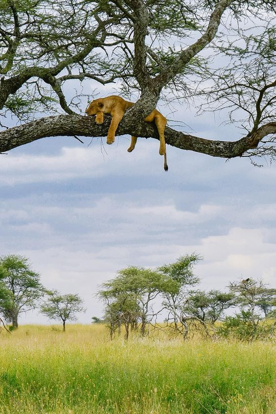

Welcome to Africa
The Nilo: counting on 6,853 km, which makes it in the second longest river in the world after the Amazon River Being the place where ancient civilizations settled Of these, the most famous is that the Egyptians live in fish like the barbel, the catfish, the tiger fish or the water leopard and not only fish are found here, there are also reptiles such as the crocodile or different species of snakes
Welcome to Africa
The East and the West: The old continent has been home since time prehistoric animals such as lions, giraffes or zebras. a flora dangerous and dozens of rivers, Africa has been one of the most visited places throughout the world due to its flora and fauna and to this day they continue to be found new species of animals. And do you dare to visit the old continent?

Welcome to Africa
The old island of Madagascar: you would have met her in the cartoons Madagascar and its giant next to it are home to vast nature. The "Baobab" trees being one of its main tree attractions up to 30 m high and reaching a longevity of up to 5000 years. trees that you should know if you visit this archipelago